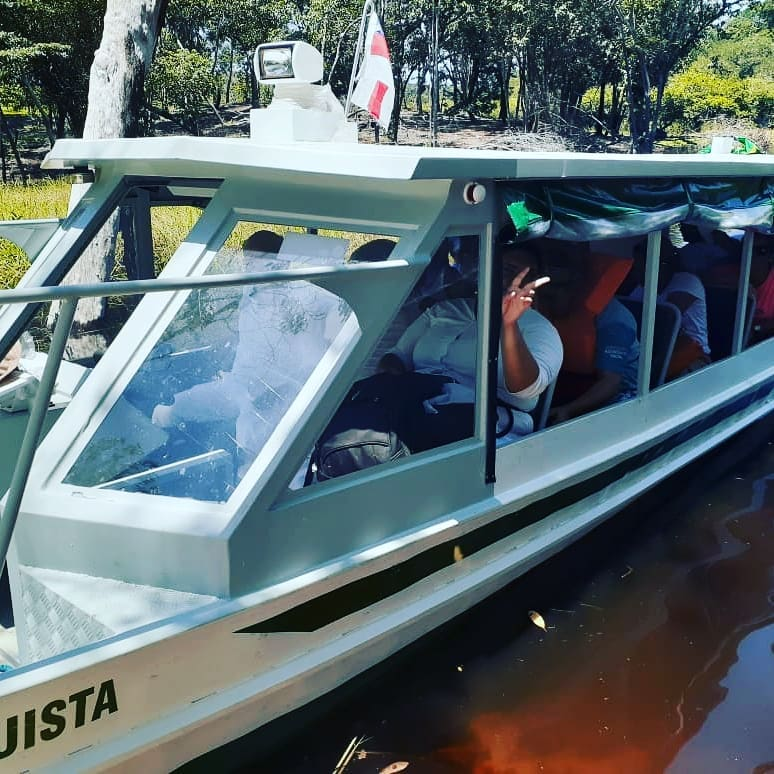

+ de 42 milhões de árvores nativas plantadas
3.000 voluntários monitorando rios em 17 estados
+ de 500 parques e reservas apoiados
+ de 2 milhões de pessoas nas mídias sociais
A organização não governamental INSTITUTO FILHOS DA AMAZONIA é um instituição social genuinamente amazonense.
CONHECENDO E APRENDENDO COM O INSTITUTO FILHOS DA AMAZONIA
A Organização Não Governamental INSTITUTO FILHOS DA AMAZÔNIA é uma Instituição Social genuinamente amazonense, sem quaisquer vínculos ou influência de instituições internacionais e governamentais, ao contrário de muitas ONGs que atuam na Amazônia. Por outro lado, como a sigla ONG define, somos NÃO GOVERNAMENTAIS, não tendo nenhum vínculo com governos municipal, estadual e federal. Aqui, destacamos que muitas instituições chamadas de ONG, na verdade não o são, por que atuam dentro de órgãos governamentais, como na SEMA do Amazonas, na FUNAI e no IBAMA. Seriam então “OGs” e não ONGs. Filhos da Amazônia pretende ser e continuar sendo uma ONG raíz, focando nos principais problemas ambientais e sociais da Amazônia, notadamente no Estado do Amazonas.
VEJA MAIS
Veja os assuntos que vamos levar para a COP28
4 de novembro de 2023
O Instituto Filhos da Amazonia participa da Conferência das Nações Unidas sobre Mudanças Climáticas de 2023 (COP28) com três painéis, sendo dois na pro...
Desmatamento na Mata Atlântica cai ...
3 de novembro de 2023
O novo boletim do Sistema de Alertas de Desmatamento Instituto Filhos da Amazonia,abrangendo os oito primeiros meses de 2023, reforça a tendência de redução ...
VEJA MAIS
Obrigação e ambição para Instituto Filhos da Amazonia
4 de novembro de 2023
Os governadores dos sete Estados do Sul e do Sudeste do Brasil se reuniram em 21 de outubro e publicaram a Carta de São Paulo. Nela, anunciaram que, “...
Novo pacto em defesa da Amazonia
5 de agosto de 2023
Desde 1988, quando aInstituto Filhos da Amazoniaa foi declarada patrimônio nacional, governos e sociedade civil se tornaram responsáveis por proteger nosso bioma ma...
Nenhum evento previsto no momento.
+ de 42 milhões de árvores nativas plantadas
3.000 voluntários monitorando rios em 17 estados
+ de 500 parques e reservas apoiados
+ de 2 milhões de pessoas nas mídias sociais
TODO DIA É DIA DE LEMBRAR E CUIDAR DA MAIOR FLORESTA TROPICAL DO PLANETA